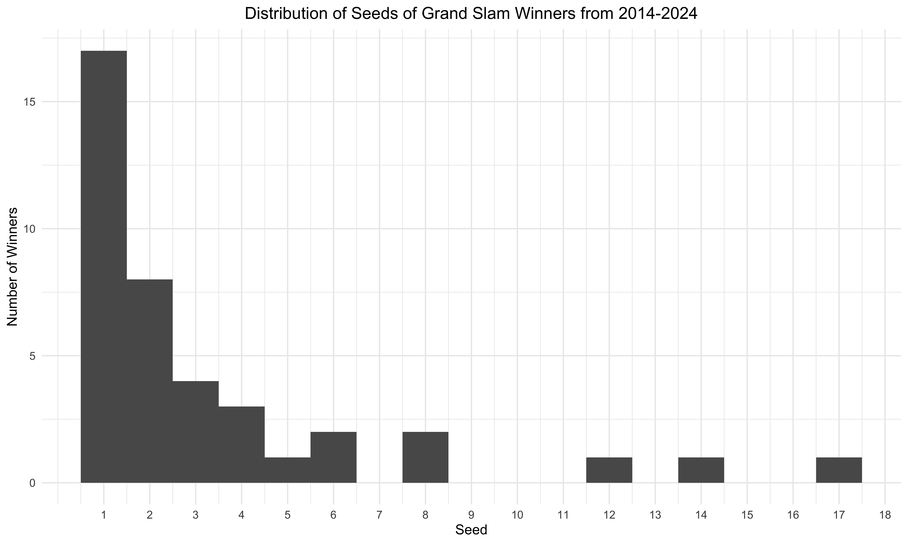
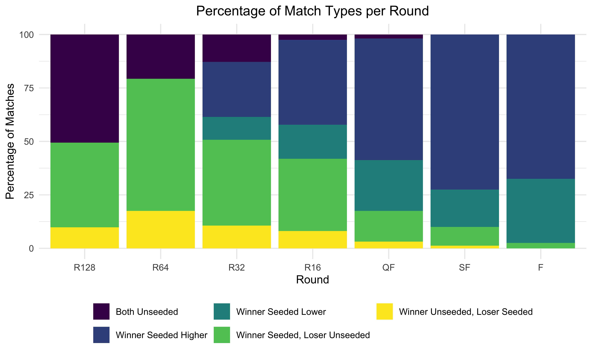
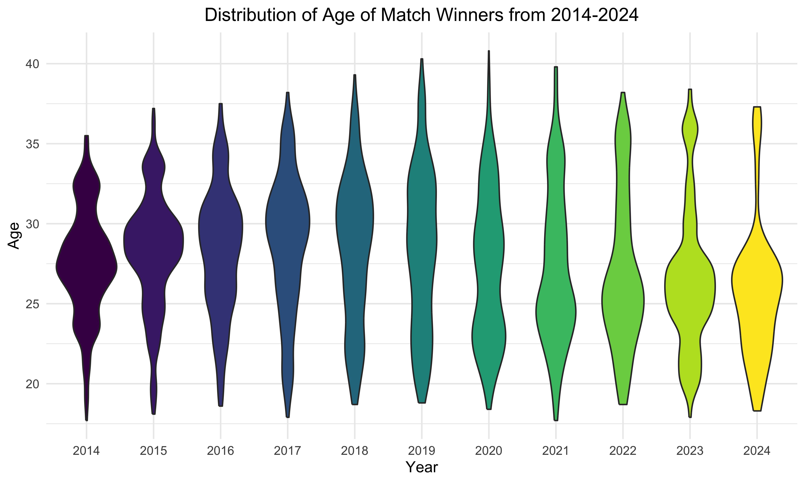

| Tournament | Year | Seed | Name |
|---|---|---|---|
| Australian Open | 2014 | 8 | Stan Wawrinka |
| US Open | 2014 | 14 | Marin Cilic |
| Roland Garros | 2015 | 8 | Stan Wawrinka |
| Australian Open | 2017 | 17 | Roger Federer |
| Wimbledon | 2018 | 12 | Novak Djokovic |
| US Open | 2018 | 6 | Novak Djokovic |
| Australian Open | 2022 | 6 | Rafael Nadal |
Now, we want to look at all matches and see the breakdown of matchups. The figure below shows the breakdown by round (for all tournaments and years) of whether both oppoenents were unseeded or if the winner was projected to win or lose (seeded lower/higher).
As expected, the first few rounds had many matches with both opponents unseeded and the majority was won otherwise by the higher seeded player. The turqoise and yellow categories are the most interesting because that means that the winner was projected to win, but lost the match. 
We want to see if whether the player being seeded higher won or
lost. Using a simple logistic regression, we looked to see if whether
the player was seeded lower (was projected to lose) or higher (was
projected to win) affected the binary outcome of winning. We combined
Winner Seeded Higher and
Winner Seeded, Loser Unseeded together to be one category
and the same for Winner Seeded Lower and
Winner Unseeded, Loser Seeded.
Based on the results, when a player is seeded higher/expected to win, they are 1.735x more likely to win than a player who is seeded lower. The p-value was incredibly small and statistically significant.
| Term | Estimate | Std.Error | Statistic | P-Value |
|---|---|---|---|---|
| (Intercept) | 0.2893773 | 0.0425848 | -29.11891 | 0 |
| seeded_higher | 11.9418362 | 0.0602240 | 41.18036 | 0 |

| Term | Estimate | Std.Error | Statistic | P-Value |
|---|---|---|---|---|
| (Intercept) | 0.9932261 | 0.0291484 | -0.2331852 | 0.8156176 |
| older_opponent | 1.0136868 | 0.0412220 | 0.3297736 | 0.7415710 |
| Term | Estimate | Std.Error | Statistic | P-Value |
|---|---|---|---|---|
| (Intercept) | 1.052632 | 0.0888523 | 0.5772870 | 0.5637456 |
| older_opponent | 0.902500 | 0.1256562 | -0.8164071 | 0.4142673 |
| Term | Estimate | Std.Error | Statistic | P-Value |
|---|---|---|---|---|
| (Intercept) | 0.8823529 | 0.1252448 | -0.9993484 | 0.3176260 |
| older_opponent | 1.2844444 | 0.1771228 | 1.4132920 | 0.1575699 |
| Term | Estimate | Std.Error | Statistic | P-Value |
|---|---|---|---|---|
| (Intercept) | 0.9766537 | 0.0887418 | -0.2662008 | 0.7900846 |
| older_opponent | 1.0483802 | 0.1254999 | 0.3764647 | 0.7065714 |
| Term | Estimate | Std.Error | Statistic | P-Value |
|---|---|---|---|---|
| (Intercept) | 0.8014184 | 0.0892791 | -2.479551 | 0.0131548 |
| older_opponent | 1.5569739 | 0.1262597 | 3.506614 | 0.0004538 |
| Term | Estimate | Std.Error | Statistic | P-Value |
|---|---|---|---|---|
| (Intercept) | 0.9391635 | 0.0886051 | -0.7083757 | 0.4787120 |
| older_opponent | 1.1337508 | 0.1253065 | 1.0017945 | 0.3164429 |
| Term | Estimate | Std.Error | Statistic | P-Value |
|---|---|---|---|---|
| (Intercept) | 0.8071429 | 0.0894209 | -2.396023 | 0.0165740 |
| older_opponent | 1.5349675 | 0.1264603 | 3.388489 | 0.0007028 |
| Term | Estimate | Std.Error | Statistic | P-Value |
|---|---|---|---|---|
| (Intercept) | 0.984375 | 0.1024663 | -0.1536931 | 0.8778518 |
| older_opponent | 1.031998 | 0.1449092 | 0.2173548 | 0.8279318 |
| Term | Estimate | Std.Error | Statistic | P-Value |
|---|---|---|---|---|
| (Intercept) | 1.1991342 | 0.0891014 | 2.038125 | 0.0415374 |
| older_opponent | 0.6954476 | 0.1260084 | -2.882344 | 0.0039473 |
| Term | Estimate | Std.Error | Statistic | P-Value |
|---|---|---|---|---|
| (Intercept) | 1.1092896 | 0.1019342 | 1.017517 | 0.3089073 |
| older_opponent | 0.8126623 | 0.1441567 | -1.438987 | 0.1501542 |
| Term | Estimate | Std.Error | Statistic | P-Value |
|---|---|---|---|---|
| (Intercept) | 1.1752137 | 0.0889372 | 1.815325 | 0.0694740 |
| older_opponent | 0.7240463 | 0.1257763 | -2.567257 | 0.0102507 |
| Term | Estimate | Std.Error | Statistic | P-Value |
|---|---|---|---|---|
| (Intercept) | 1.2631579 | 0.1772912 | 1.317690 | 0.1876074 |
| older_opponent | 0.6267361 | 0.2507276 | -1.863495 | 0.0623926 |
seeded_higher, older_opponent,
preferred hand, height, age,
ATP rank.Higher Seed: if the player has the higher seed, they
are more likely to win (consistent with the above)Height: the taller the player, the more likely they are
to win. Makes sense because the taller you are, the more power you
haveRank: similar to the higher seed, but a little
different because all players have a rank. The higher you are ranked,
the more likely you are to win.| Variable | Estimate | Std.Error | Statistic | P-Value |
|---|---|---|---|---|
| Intercept | 0.080 | 0.859 | -2.945 | 0.003 |
| Higher Seed | 7.797 | 0.076 | 26.963 | 0.000 |
| Older Opponent | 1.019 | 0.073 | 0.256 | 0.798 |
| Player’s Preferred Hand | 1.001 | 0.093 | 0.008 | 0.994 |
| Height | 1.010 | 0.004 | 2.362 | 0.018 |
| Age | 0.996 | 0.008 | -0.462 | 0.644 |
| Rank | 0.993 | 0.001 | -7.664 | 0.000 |
Length of Match, Aces,
Double Faults, Serve Points,
1st Serves Made, 1st Serves Won,
2nd Serves Won, % of Break Points Saved,
Number of Sets Played.Length of Match/Number of Sets Played:
Longer the match, the more likely you are to win - this one is
interesting to think about. Maybe certain players thrive on longer
matches and gives them more energy to fight for.Number of Aces: This was interesting because it was a
negative association. Maybe those who rely on their serves too much get
more aces at times, but are more inconsistent and double fault, leading
them to lose the match.Number of Serve Points/Games: The more times you have
to serve, the less likely that you are to win. This makes sense because
serving a lot may lead to fatigue.Number of 1st & 2nd Serves Won: These both make a
lot of sense. This also lines up with how many points a player wins,
which is a good indicator of if they ultimately win.% of Break Points Saved: The more break points you
save, the more likely you are to win. This is also very self-explanatory
because if you lose a break point, your opponent wins a game that you
are supposed to win.| Variable | Estimate | Std.Error | Statistic | P-Value |
|---|---|---|---|---|
| Intercept | 0.307 | 0.168 | -7.047 | 0.000 |
| Length of Match | 1.016 | 0.002 | 10.414 | 0.000 |
| Number of Aces | 0.941 | 0.005 | -11.007 | 0.000 |
| Number of Double Faults | 1.021 | 0.012 | 1.703 | 0.089 |
| Number of Serve Points | 0.834 | 0.006 | -30.040 | 0.000 |
| Number of 1st Serves Made | 0.988 | 0.008 | -1.580 | 0.114 |
| Number of 1st Serves Won | 1.351 | 0.009 | 34.040 | 0.000 |
| Number of 2nd Serves Won | 1.349 | 0.010 | 29.195 | 0.000 |
| Number of Serve Games | 0.708 | 0.030 | -11.474 | 0.000 |
| % of Break Points Saved | 5.113 | 0.173 | 9.439 | 0.000 |
| Number of Sets Played | 2.988 | 0.089 | 12.352 | 0.000 |